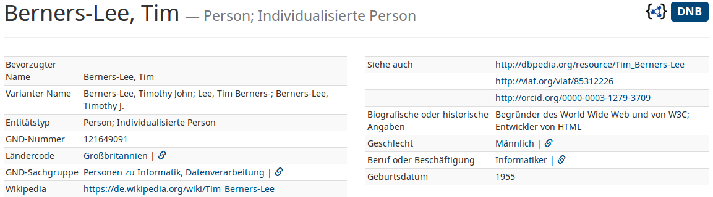

lobid-gnd
Christoph Ewertowski
Linked Open Data, Hochschulbibliothekszentrum NRW (hbz)

DINI-KIM-Workshop 2018, Mannheim, 2018-04-10/2018-04-11
Abrufbar unter:
http://slides.lobid.org/kim-ws-2018-lightning-talk/

Was ist lobid-gnd?
Inhalt: >14,7 Mio. Normdatensätze der GND (Gemeinsame Normdatei)
Oberfläche zur Recherche
Web-API zur Abfrage von Daten im Format JSON-LD (für Einzeltreffer auch N-Triples, RDF-XML, Turtle)
URL: http://lobid.org/gnd
im Beta-Status, Feedback erwünscht! (http://lobid.org/team)
Interaktionsmöglichkeiten I
- Suche über Suchzeile
- Einschränken über Facetten (Standard: Anzeige weniger Fälle, Unterklassen nicht angezeigt)
- Entitätstyp: Person, Körperschaft, Konferenz oder Veranstaltung, Werk, Geografikum, Schlagwort, Familie
- GND-Sachgruppen
- Ländercodes
- Beruf oder Beschäftigung
Interaktionsmöglichkeiten II
Detailansicht
- Filtern in der Detailansicht (z.B. im Eintrag von Tim Berners-Lee nach Informatikern)
- Zu weitere Informationen extern gelangen
- DBpedia, ORCid, VIAF etc.
- Wikipedia
- Quellen für Tripel-Objekte (Kettensymbol)
Anwendungsmöglichkeiten
Zusammenführung von Personensätzen: Suche filtern nach individualisierten/nicht-individualisierten Personen. Suche nach Person mit Nachnamen "Meier" und Vornamen "Fritz" (21, 15 davon individualisiert)
Katalog mit aktuellen GND-Informationen anreichern (z.B. Beruf, Wikipedia-Links, Hierarchien von Körperschaften/Geografischen Einheiten)
Qualitätsverbesserung der GND: z.B. Personen ohne Geschlechtsangabe mit Ländercode XA-DE-NW (Nordrhein-Westfalen) (~690)
Weitere Quellen
Beschreibung der API-Abfragemöglichkeiten: http://lobid.org/gnd/api
lobid-gnd Code auf GitHub